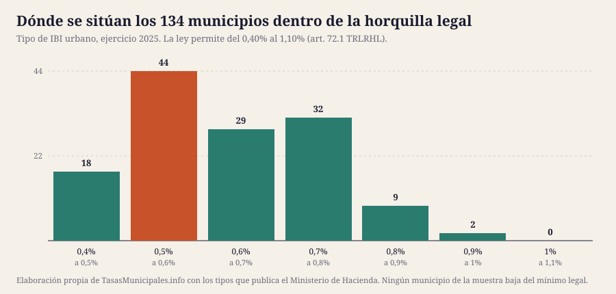

Entre el municipio que más grava y el que menos hay 292 € al año de diferencia por un inmueble con el mismo valor catastral. Análisis del tipo de gravamen oficial de 134 municipios, ejercicio 2025.
Por Aithamy Rivero · Actualizado el 25 de julio de 2026 · Metodología y fuentes
Hemos normalizado el tipo de gravamen del IBI urbano de 134 municipios tal y como lo publica el Ministerio de Hacienda para el ejercicio 2025. El resultado: la mediana está en el 0,6065% y la media en el 0,6258%.
Entre el municipio con el tipo más alto (Vigo, 0,984%) y el más bajo (Redondela, 0,4%) hay 0,584 puntos. Traducido: por un inmueble con el mismo valor catastral de 50.000 €, la diferencia es de 292 € al año.
La comparación del tipo tiene un límite importante que conviene decir antes de seguir: un tipo alto no significa un recibo alto. La cuota es valor catastral × tipo, y el valor catastral depende de cuándo hizo el municipio su última valoración colectiva. Un ayuntamiento con valores de 1996 puede aplicar un tipo del 0,9% y cobrar menos que otro con valores de 2015 al 0,5%. Lo analizamos en el artículo sobre la antigüedad de las ponencias catastrales.

El gráfico deja ver algo que las tablas esconden: los municipios no se reparten por igual dentro de la horquilla legal. Se concentran en la mitad baja, y el techo del 1,10% queda muy lejos incluso para el más gravado de la muestra. Es decir, casi todos los ayuntamientos conservan margen para subir el tipo sin necesidad de ninguna reforma estatal.
| # | Municipio | Provincia | Tipo urbano | Cuota con VC de 50.000 € |
|---|---|---|---|---|
| 1 | Vigo | Pontevedra | 0,984% | 492 € |
| 2 | Almansa | Albacete | 0,95% | 475 € |
| 3 | Monzón | Huesca | 0,88% | 440 € |
| 4 | Mieres | Asturias | 0,854% | 427 € |
| 5 | Sabiñánigo | Huesca | 0,84% | 420 € |
| 6 | Grado | Asturias | 0,84% | 420 € |
| 7 | Cangas de Onís | Asturias | 0,83% | 415 € |
| 8 | Molina de Segura | Murcia | 0,8075% | 404 € |
| 9 | Alfaro | La Rioja | 0,8% | 400 € |
| 10 | Arnedo | La Rioja | 0,8% | 400 € |
| 11 | Alcantarilla | Murcia | 0,8% | 400 € |
| 12 | Daimiel | Ciudad Real | 0,79% | 395 € |
| 13 | Valdepeñas | Ciudad Real | 0,78% | 390 € |
| 14 | Ponferrada | León | 0,78% | 390 € |
| 15 | Barbastro | Huesca | 0,776% | 388 € |
| # | Municipio | Provincia | Tipo urbano | Cuota con VC de 50.000 € |
|---|---|---|---|---|
| 120 | Burgos | Burgos | 0,4568% | 228 € |
| 121 | Gijón | Asturias | 0,45% | 225 € |
| 122 | Ourense | Ourense | 0,45% | 225 € |
| 123 | Albacete | Albacete | 0,446% | 223 € |
| 124 | Teruel | Teruel | 0,444% | 222 € |
| 125 | Toledo | Toledo | 0,444% | 222 € |
| 126 | Carballo | A Coruña | 0,44% | 220 € |
| 127 | Cabanillas del Campo | Guadalajara | 0,43% | 215 € |
| 128 | Utebo | Zaragoza | 0,4% | 200 € |
| 129 | Zaragoza | Zaragoza | 0,4% | 200 € |
| 130 | Santander | Cantabria | 0,4% | 200 € |
| 131 | Arteixo | A Coruña | 0,4% | 200 € |
| 132 | Ribeira | A Coruña | 0,4% | 200 € |
| 133 | O Porriño | Pontevedra | 0,4% | 200 € |
| 134 | Redondela | Pontevedra | 0,4% | 200 € |
El suelo legal está en el 0,40% para urbana (art. 72.1 del TRLRHL), así que los municipios que aparecen con ese tipo exacto están aplicando el mínimo que la ley les permite.
| Tramo de tipo urbano | Municipios | % del total |
|---|---|---|
| Hasta 0,5% | 18 | 13,4% |
| 0,5% – 0,6% | 44 | 32,8% |
| 0,6% – 0,7% | 29 | 21,6% |
| 0,7% – 0,8% | 32 | 23,9% |
| 0,8% – 0,9% | 9 | 6,7% |
| 0,9% – 1,1% | 2 | 1,5% |
La horquilla legal para urbana va del 0,40% al 1,10%. El tipo más alto de la muestra es el 0,984% de Vigo, todavía 0,116 puntos por debajo del techo, y 7 municipios aplican exactamente el mínimo del 0,40%. El margen que la ley deja sin usar es amplio: por eso las subidas de IBI se pueden aprobar en el pleno sin tocar la ley estatal.
El IBI es un impuesto municipal: la comunidad autónoma no lo regula. Aun así, las medianas por territorio son distintas porque también lo son el tamaño de los municipios de la muestra y la antigüedad de sus valores catastrales.
| Comunidad | Municipios analizados | Mediana del tipo | Cuota con VC de 50.000 € |
|---|---|---|---|
| Extremadura | 15 | 0,7% | 350 € |
| Asturias | 13 | 0,68% | 340 € |
| Aragón | 14 | 0,6643% | 332 € |
| Castilla y León | 14 | 0,628% | 314 € |
| Castilla-La Mancha | 20 | 0,6235% | 312 € |
| Murcia | 16 | 0,6138% | 307 € |
| La Rioja | 8 | 0,61% | 305 € |
| Galicia | 24 | 0,535% | 268 € |
| Cantabria | 10 | 0,528% | 264 € |
La muestra no es representativa del total de municipios de cada comunidad: recoge los que tienen ficha en esta guía, con sesgo hacia los más poblados.
De los 134 municipios, 18 han subido el tipo y 8 lo han bajado; los 108 restantes lo mantienen igual.
| Municipio | 2024 | 2025 | Variación |
|---|---|---|---|
| Segovia | 0,4813% | 0,655% | Sube 0,174 puntos |
| Molina de Segura | 0,733% | 0,8075% | Sube 0,075 puntos |
| Lugo | 0,67% | 0,74% | Sube 0,070 puntos |
| Ferrol | 0,63% | 0,69% | Sube 0,060 puntos |
| Camargo | 0,477% | 0,52% | Sube 0,043 puntos |
| Grado | 0,88% | 0,84% | Baja 0,040 puntos |
| Oviedo | 0,54% | 0,58% | Sube 0,040 puntos |
| Vigo | 0,946% | 0,984% | Sube 0,038 puntos |
| Ávila | 0,543% | 0,581% | Sube 0,038 puntos |
| Valladolid | 0,6144% | 0,5837% | Baja 0,031 puntos |
| Yecla | 0,65% | 0,68% | Sube 0,030 puntos |
| Torrelavega | 0,64% | 0,67% | Sube 0,030 puntos |
| Cáceres | 0,75% | 0,72% | Baja 0,030 puntos |
| Almendralejo | 0,55% | 0,58% | Sube 0,030 puntos |
| Águilas | 0,51% | 0,536% | Sube 0,026 puntos |
| Azuqueca de Henares | 0,56% | 0,585% | Sube 0,025 puntos |
| Murcia | 0,6881% | 0,7115% | Sube 0,023 puntos |
| San Javier | 0,53% | 0,55% | Sube 0,020 puntos |
| Santoña | 0,715% | 0,7% | Baja 0,015 puntos |
| Soria | 0,594% | 0,608% | Sube 0,014 puntos |
| Calatayud | 0,487% | 0,4977% | Sube 0,011 puntos |
| Valdepeñas | 0,79% | 0,78% | Baja 0,010 puntos |
| Ciudad Real | 0,77% | 0,76% | Baja 0,010 puntos |
| Tarazona | 0,74% | 0,73% | Baja 0,010 puntos |
| Logroño | 0,58% | 0,575% | Baja 0,005 puntos |
| Laredo | 0,6% | 0,6033% | Sube 0,003 puntos |
Los tipos proceden de la consulta de información impositiva municipal del Ministerio de Hacienda, que recoge lo aprobado en la ordenanza fiscal de cada ayuntamiento. Es la única fuente estatal que publica el dato municipio a municipio y ejercicio a ejercicio, y el último disponible es 2025.
La «cuota con VC de 50.000 €» es un cálculo nuestro para comparar en igualdad de condiciones: tipo × 50.000 €. Es la cuota íntegra, sin bonificaciones ni recargos. Para tu caso concreto usa la calculadora con tu valor catastral.
Si un pleno ha modificado el tipo para 2026, el cambio aparece antes en la ordenanza municipal que en la estadística estatal. En la ficha de cada municipio enlazamos su organismo de recaudación para comprobarlo.